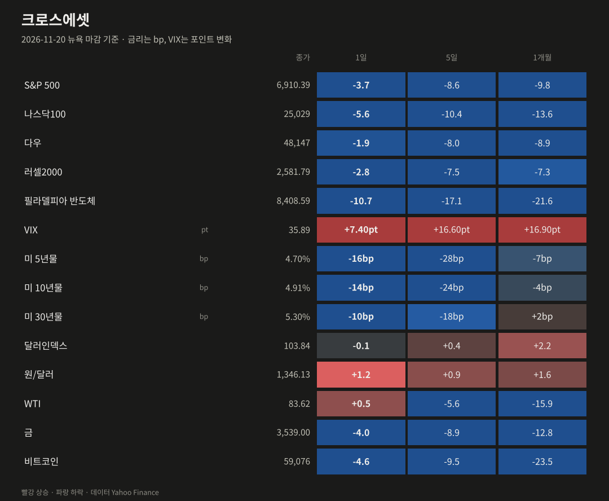
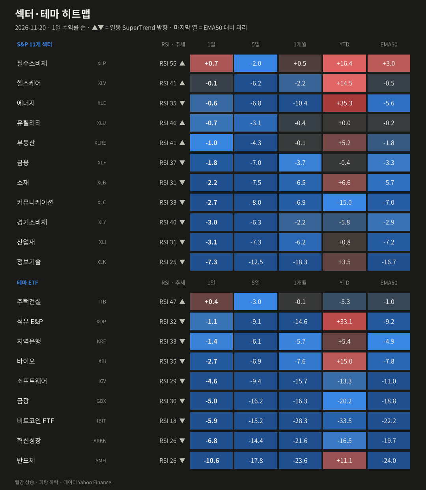
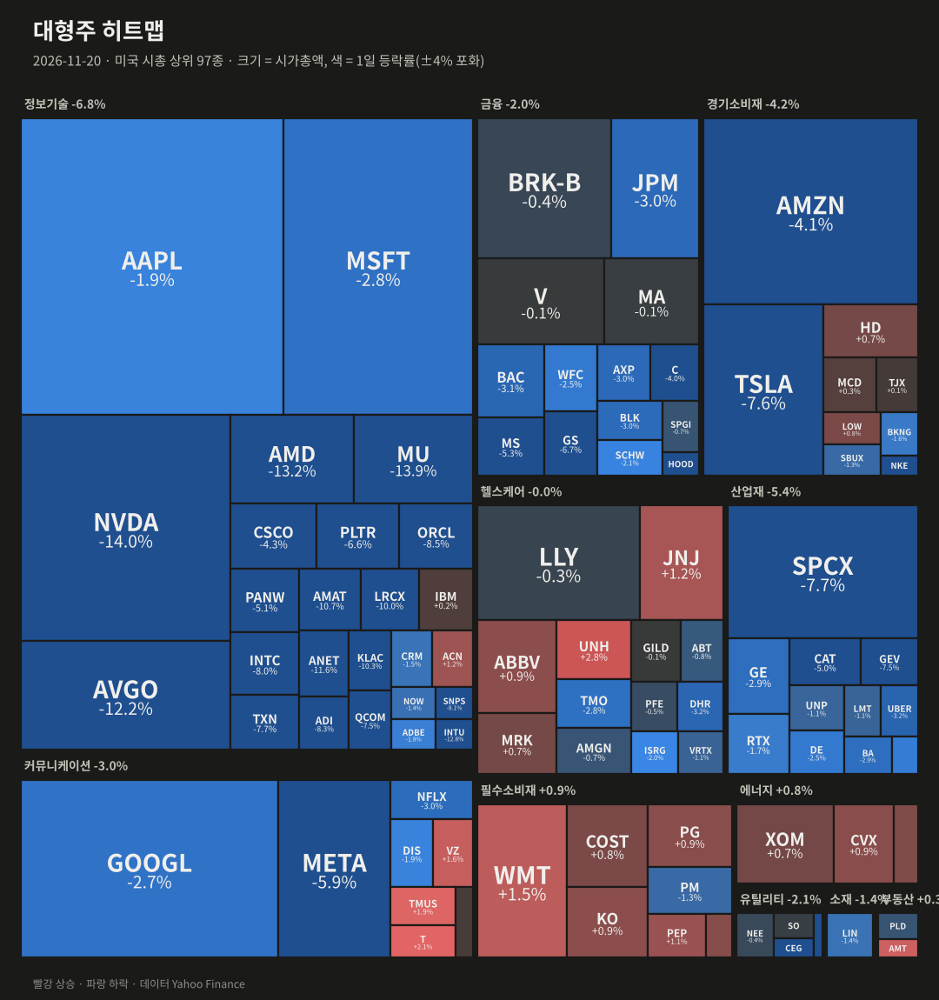
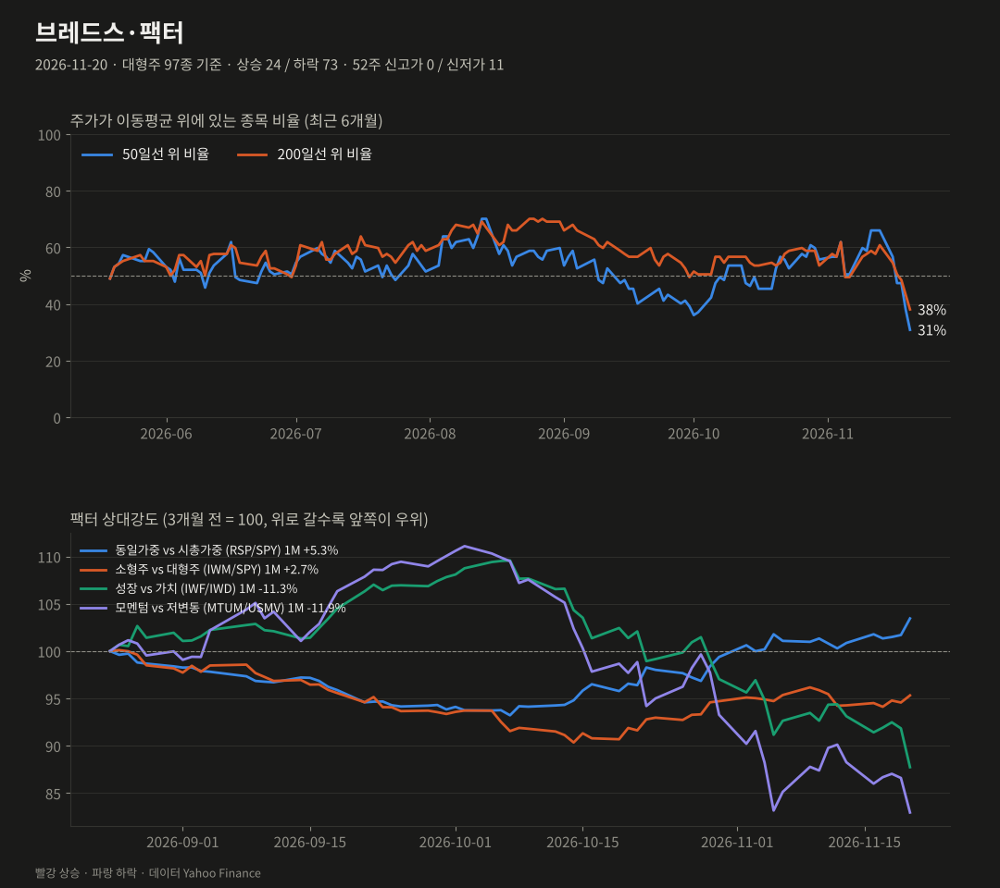
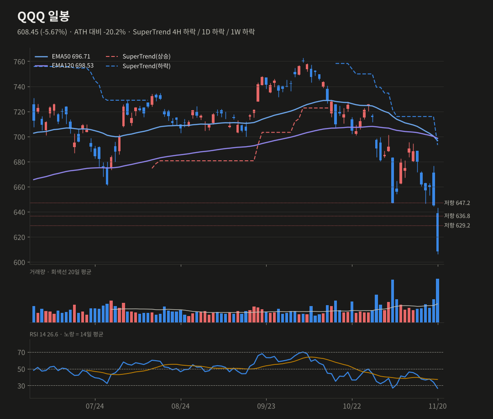
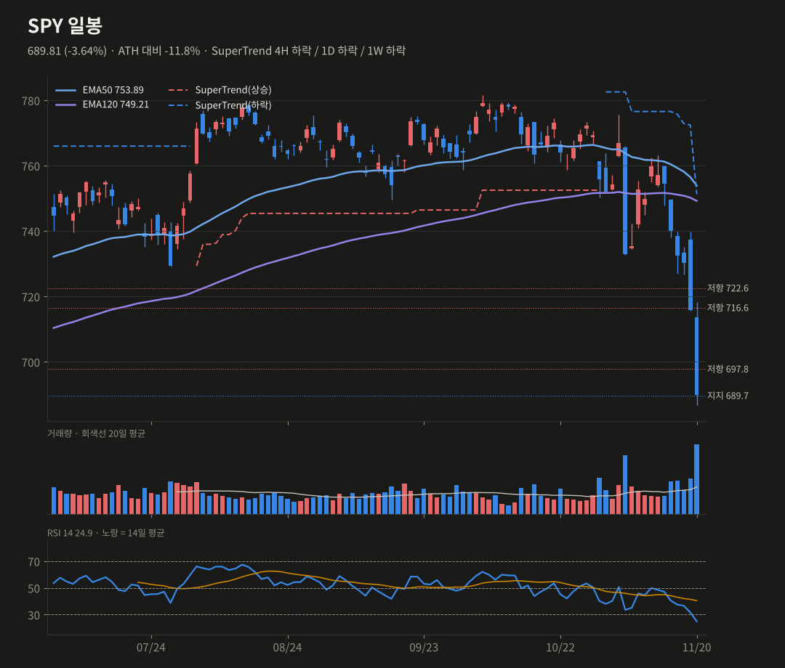
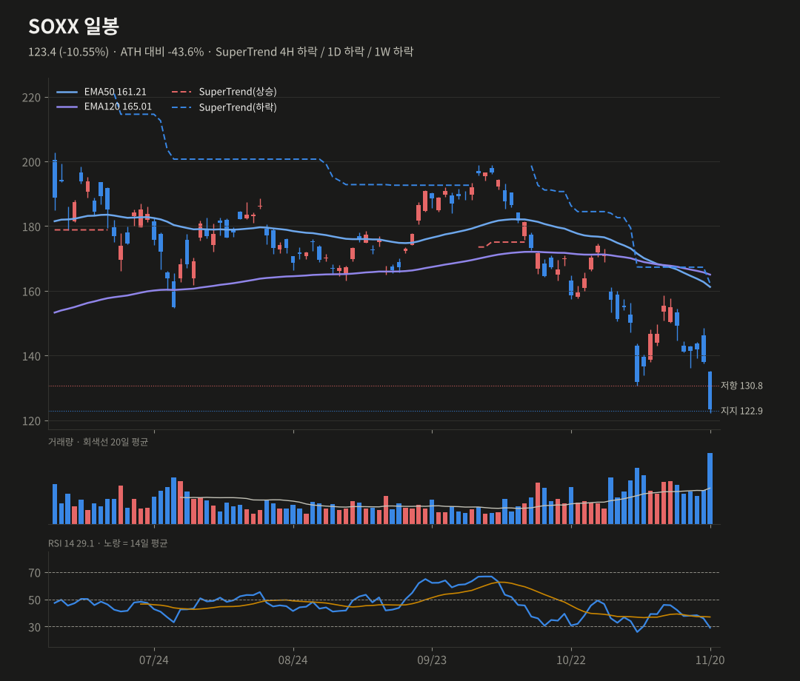
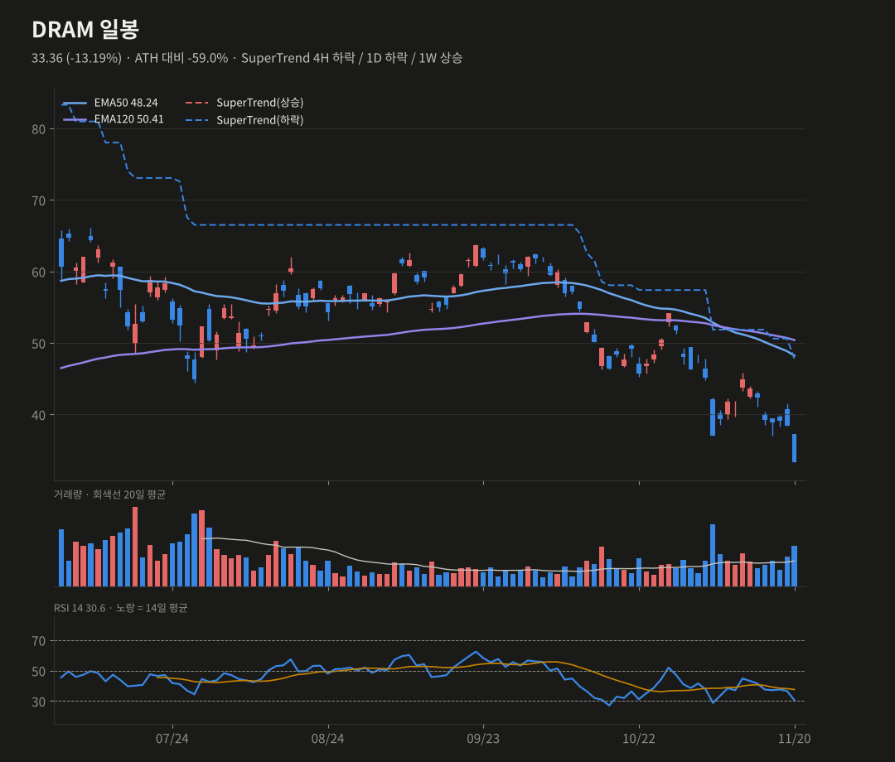

미증시 마감 브리핑
11/20(금) 뉴욕 마감 기준 · 생성 2026-11-21 07:41 KST
엔비디아가 SEC 회계 조사 보도에 −14% 급락해 반도체 −10.7%, 나스닥100 −5.6%였어요. VIX는 35.9예요.
S&P 5006,910.39-3.70%
나스닥10025,029-5.61%
다우48,147-1.93%
러셀20002,581.79-2.76%
반도체(SOX)8,408.59-10.73%
VIX35.89+7.40pt
미 10년물4.91%-14.00bp
원/달러1,346.13+1.18%
요약
- 엔비디아가 SEC 회계 조사 보도에 −14%, 반도체 지수는 −10.7%예요.
- S&P −3.7%, 나스닥100 −5.6%(고점 대비 −20%), VIX 35.9예요.
- 10년물은 4.91%(−14bp)로 내렸고, 시간외 QQQ는 +1.4%예요.
- SPY 689.7, QQQ 583.3이 지지선이고, 다음 주는 추수감사절 주간이에요.
종합 판단
엔비디아 회계 조사 보도가 AI 매도에 기름을 부어 반도체가 하루 −10.7% 빠졌어요. 나스닥100은 고점 대비 −20%로 약세장 기준에 닿았고, SPY는 금요일 종가로 주봉 SuperTrend 하락이 확정됐어요. 다만 10년물이 하루 14bp 내린 안전자산 쏠림, 4H RSI 20 안팎의 과매도, 거래량 급증과 시간외 반등은 투매 끝물에서 자주 보이는 모습이에요. 지수 단기 확률만 5%p 올렸고, 조사 결과가 나오기 전까지 반도체 변동성은 클 거예요. 다음 주는 추수감사절로 거래일이 짧아 유동성이 얇아요.
엔비디아 회계 조사 보도가 AI 매도에 기름을 부어 반도체가 하루 −10.7% 빠졌어요. 나스닥100은 고점 대비 −20%로 약세장 기준에 닿았고, SPY는 금요일 종가로 주봉 SuperTrend 하락이 확정됐어요. 다만 10년물이 하루 14bp 내린 안전자산 쏠림, 4H RSI 20 안팎의 과매도, 거래량 급증과 시간외 반등은 투매 끝물에서 자주 보이는 모습이에요. 지수 단기 확률만 5%p 올렸고, 조사 결과가 나오기 전까지 반도체 변동성은 클 거예요. 다음 주는 추수감사절로 거래일이 짧아 유동성이 얇아요.
무엇이 시장을 움직였나
- 엔비디아 −14.0%(125.53달러): SEC가 엔비디아를 조사한다는 WSJ 보도(화요일)에 이어, 금요일 로이터가 '집행 부서가 회계 문제를 들여다보고 있다'고 보도했어요. 하루에 시총 약 4,910억 달러가 사라졌고, 10/6 최고가 대비 −48%예요(Motley Fool). 7주 연속 하락으로 2008년 이후 최장이에요(CNBC).
- 반도체 동반 급락: 마이크론 −13.9%, AMD −13.3%, 브로드컴 −12.2%, 아리스타 −11.6%로 필라델피아 반도체가 −10.7%였어요. 인튜이트는 실적 뒤 −12.8%, 앤트로픽은 88.91달러(−8.5%)로 공모가(83달러)에 다가갔어요.
- 안전자산 쏠림: 10년물 4.91%(−14bp), 5년물 4.70%(−16.5bp)로 국채 금리가 크게 내렸고, VIX는 35.9(+7.4pt)예요. 금(−4.0%)과 비트코인(−4.6%)도 함께 팔려 현금을 마련하려는 매도가 컸어요.
- 방어주로 이동: 필수소비재(+0.7%)만 올랐고 UNH +2.8%, 월마트 +1.5%, AT&T·T모바일·버라이즌 등 통신주가 강했어요. 성장주는 가치주 대비 1개월 −11.3%p로 벌어졌어요.
장 마감 후·시간외
- QQQ 616.8(+1.4%), SPY 695.6(+0.8%), SOXX 127.3(+3.2%), DRAM 34.3(+2.8%), 엔비디아 129.75(+3.4%)로 시간외에서 반등하고 있어요.

| 자산 | 종가 | 1일 | 5일 | 1개월 |
|---|---|---|---|---|
| S&P 500 | 6910.39 | -3.70% | -8.61% | -9.83% |
| 나스닥100 | 25028.98 | -5.61% | -10.43% | -13.57% |
| 다우 | 48147.33 | -1.93% | -8.02% | -8.93% |
| 러셀2000 | 2581.79 | -2.76% | -7.48% | -7.26% |
| 필라델피아 반도체 | 8408.59 | -10.73% | -17.13% | -21.65% |
| VIX | 35.89 | +7.40pt | +16.60pt | +16.90pt |
| 미 5년물 | 4.701 | -16.5bp | -28.0bp | -6.7bp |
| 미 10년물 | 4.912 | -14.0bp | -24.2bp | -4.1bp |
| 미 30년물 | 5.303 | -9.8bp | -17.8bp | +1.6bp |
| 달러인덱스 | 103.84 | -0.06% | +0.42% | +2.19% |
| 원/달러 | 1346.13 | +1.18% | +0.93% | +1.55% |
| WTI | 83.62 | +0.49% | -5.58% | -15.93% |
| 금 | 3539.0 | -3.98% | -8.94% | -12.84% |
| 비트코인 | 59075.98 | -4.57% | -9.54% | -23.47% |

| 섹터·테마 | 1일 | 5일 | 1개월 | YTD | RSI | 일봉 추세 |
|---|---|---|---|---|---|---|
| 필수소비재 XLP | +0.67% | -2.05% | +0.52% | +16.4% | 55 | 상승 |
| 주택건설 ITB | +0.41% | -3.04% | -0.10% | -5.3% | 47 | 상승 |
| 헬스케어 XLV | -0.12% | -6.15% | -2.24% | +14.5% | 41 | 상승 |
| 에너지 XLE | -0.62% | -6.85% | -10.45% | +35.3% | 35 | 하락 |
| 유틸리티 XLU | -0.74% | -3.07% | -0.42% | +0.0% | 46 | 상승 |
| 부동산 XLRE | -0.98% | -4.30% | -0.14% | +5.2% | 41 | 상승 |
| 석유 E&P XOP | -1.11% | -9.06% | -14.63% | +33.1% | 32 | 하락 |
| 지역은행 KRE | -1.36% | -6.08% | -5.65% | +5.4% | 33 | 하락 |
| 금융 XLF | -1.82% | -7.00% | -3.67% | -0.4% | 37 | 하락 |
| 소재 XLB | -2.19% | -7.45% | -6.48% | +6.6% | 31 | 하락 |
| 커뮤니케이션 XLC | -2.66% | -7.97% | -6.88% | -15.0% | 33 | 하락 |
| 바이오 XBI | -2.73% | -6.89% | -7.56% | +15.0% | 35 | 하락 |
| 경기소비재 XLY | -2.95% | -6.27% | -2.22% | -5.8% | 40 | 하락 |
| 산업재 XLI | -3.09% | -7.35% | -6.21% | +0.8% | 31 | 하락 |
| 소프트웨어 IGV | -4.62% | -9.42% | -15.69% | -13.3% | 29 | 하락 |
| 금광 GDX | -5.00% | -16.22% | -16.27% | -20.2% | 30 | 하락 |
| 비트코인 ETF IBIT | -5.87% | -15.20% | -28.31% | -33.5% | 18 | 하락 |
| 혁신성장 ARKK | -6.83% | -14.36% | -21.55% | -16.5% | 26 | 하락 |
| 정보기술 XLK | -7.27% | -12.49% | -18.28% | +3.5% | 25 | 하락 |
| 반도체 SMH | -10.60% | -17.81% | -23.56% | +11.1% | 26 | 하락 |

| 상승 상위 | 1일 | 거래량(20일 대비) | 하락 상위 | 1일 | 거래량 |
|---|---|---|---|---|---|
| UNH | +2.84% | x2.0 | NVDA | -14.01% | x2.39 |
| T | +2.11% | x1.12 | MU | -13.89% | x1.84 |
| TMUS | +1.89% | x0.96 | AMD | -13.25% | x1.76 |
| AMT | +1.69% | x0.86 | INTU | -12.77% | x3.49 |
| VZ | +1.62% | x1.19 | AVGO | -12.19% | x2.11 |
| WMT | +1.52% | x1.89 | ANET | -11.59% | x1.59 |

대형주 97종: 상승 24 / 하락 73 · 50일선 위 30.9% (전일 38.1%, 5일 전 66.0%) · 200일선 위 38.1% · 52주 신고가 0 / 신저가 11
오른 종목 24, 내린 종목 73이에요. SMA50 위 비율은 30.9%로 하루 만에 7%p, 5일 전(66.0%)보다 35%p 떨어졌고, 52주 신저가 11개·신고가 0개예요. 동일가중(RSP −1.98%)이 시총가중(SPY −3.64%)보다 1.7%p 덜 빠져 대형 기술주에 매도가 몰렸어요. 이번 주 SPY −8.6%, QQQ −10.5%예요.
| 팩터 스프레드 | 1일 | 5일 | 1개월 |
|---|---|---|---|
| 동일가중 vs 시총가중 (RSP/SPY) | +1.72% | +2.57% | +5.28% |
| 소형주 vs 대형주 (IWM/SPY) | +0.79% | +1.11% | +2.72% |
| 성장 vs 가치 (IWF/IWD) | -4.46% | -5.77% | -11.31% |
| 모멘텀 vs 저변동 (MTUM/USMV) | -4.21% | -6.01% | -11.94% |
기술적 분석 · 확률
TradingView 설정과 맞춘 지표(EMA50·EMA120, SuperTrend ATR20×4, RSI14, MACD 12/26/9). 확률은 차트 기반 추정치예요.
QQQ 608.45 -5.67%
SuperTrend 4H 하락 / 1D 하락 / 1W 하락 · RSI 26.63
단기 반등 45% (+5) · 스윙 상승 25%
608.45(−5.7%)로 고점 대비 −20.2%예요. 4H RSI 22.2, 일봉 RSI 26.6으로 과매도 극단이고 일봉 거래량은 평균의 2.6배였어요. 주봉 MACD 히스토그램은 −9.88→−14.19로 커졌어요. 시간외 616.8(+1.4%)로 반등 중이라 단기는 5%p 올렸고, 스윙은 하한(25%) 그대로예요. 583.3을 내주면 555.6까지 열려 있어요.
상방 629.2 회복 → 636.8, 647.2
하방 583.3 이탈 → 555.6
SuperTrend 4H 하락 / 1D 하락 / 1W 하락 · RSI 26.63
단기 반등 45% (+5) · 스윙 상승 25%
608.45(−5.7%)로 고점 대비 −20.2%예요. 4H RSI 22.2, 일봉 RSI 26.6으로 과매도 극단이고 일봉 거래량은 평균의 2.6배였어요. 주봉 MACD 히스토그램은 −9.88→−14.19로 커졌어요. 시간외 616.8(+1.4%)로 반등 중이라 단기는 5%p 올렸고, 스윙은 하한(25%) 그대로예요. 583.3을 내주면 555.6까지 열려 있어요.
상방 629.2 회복 → 636.8, 647.2
하방 583.3 이탈 → 555.6
SPY 689.81 -3.64%
SuperTrend 4H 하락 / 1D 하락 / 1W 하락 · RSI 24.91
단기 반등 45% (+5) · 스윙 상승 25%
689.8(−3.6%)로 지지선 689.7 바로 위에서 마감했고, 금요일 종가로 주봉 SuperTrend가 하락(785.8)으로 확정됐어요. 4H RSI 19.6, 4H 거래량이 평균의 7.5배로 투매에 가까운 모습이에요. 이번 주는 −8.6%예요. 과매도와 시간외 반등(695.6)을 반영해 단기만 5%p 올렸어요.
상방 697.8 회복 → 716.6, 722.9(주봉 EMA50)
하방 689.7 이탈 → 651.9, 629.3
SuperTrend 4H 하락 / 1D 하락 / 1W 하락 · RSI 24.91
단기 반등 45% (+5) · 스윙 상승 25%
689.8(−3.6%)로 지지선 689.7 바로 위에서 마감했고, 금요일 종가로 주봉 SuperTrend가 하락(785.8)으로 확정됐어요. 4H RSI 19.6, 4H 거래량이 평균의 7.5배로 투매에 가까운 모습이에요. 이번 주는 −8.6%예요. 과매도와 시간외 반등(695.6)을 반영해 단기만 5%p 올렸어요.
상방 697.8 회복 → 716.6, 722.9(주봉 EMA50)
하방 689.7 이탈 → 651.9, 629.3
SOXX 123.4 -10.55%
SuperTrend 4H 하락 / 1D 하락 / 1W 하락 · RSI 29.13
단기 반등 40% · 스윙 상승 25%
−10.55%로 하루 만에 4H SuperTrend가 하락으로 바뀌었고, 고점 대비 −43.6%예요. 지지선 122.9 바로 위에서 마감했어요. 시간외 127.3(+3.2%)로 반등했지만, 엔비디아 회계 조사 결과가 나오기 전까지 변동성이 클 거예요. 그 아래 주봉 EMA120(120.1)이 마지막 장기선이에요.
상방 130.8 회복 → 135.2
하방 122.9 이탈 → 120.1(주봉 EMA120)
SuperTrend 4H 하락 / 1D 하락 / 1W 하락 · RSI 29.13
단기 반등 40% · 스윙 상승 25%
−10.55%로 하루 만에 4H SuperTrend가 하락으로 바뀌었고, 고점 대비 −43.6%예요. 지지선 122.9 바로 위에서 마감했어요. 시간외 127.3(+3.2%)로 반등했지만, 엔비디아 회계 조사 결과가 나오기 전까지 변동성이 클 거예요. 그 아래 주봉 EMA120(120.1)이 마지막 장기선이에요.
상방 130.8 회복 → 135.2
하방 122.9 이탈 → 120.1(주봉 EMA120)
DRAM 33.36 -13.19%
SuperTrend 4H 하락 / 1D 하락 / 1W 상승 · RSI 30.57
단기 반등 40% · 스윙 상승 25%
33.36(−13.2%)으로 고점 대비 −59%예요. 주봉 EMA120(38.4)을 크게 내줬고, 다음 지지는 주봉 SuperTrend(29.4)뿐이에요. 4H RSI 26.5로 과매도이고 시간외 34.3(+2.8%)이에요. 마이크론은 −13.9%였어요. 상장 이력이 짧아 주봉 지표는 참고만 해요.
상방 38.4 회복 → 41.9(4H SuperTrend)
하방 29.4(주봉 SuperTrend)까지 지지 없음
SuperTrend 4H 하락 / 1D 하락 / 1W 상승 · RSI 30.57
단기 반등 40% · 스윙 상승 25%
33.36(−13.2%)으로 고점 대비 −59%예요. 주봉 EMA120(38.4)을 크게 내줬고, 다음 지지는 주봉 SuperTrend(29.4)뿐이에요. 4H RSI 26.5로 과매도이고 시간외 34.3(+2.8%)이에요. 마이크론은 −13.9%였어요. 상장 이력이 짧아 주봉 지표는 참고만 해요.
상방 38.4 회복 → 41.9(4H SuperTrend)
하방 29.4(주봉 SuperTrend)까지 지지 없음




일정
- 11/23 HPE(장후), 11/24 델(장후)·ADI·메드트로닉(장전) 실적
- 11/26 추수감사절 휴장, 11/27 조기 폐장
- 12/8~9 FOMC
출처
- Stock Market Today, Nov. 20: Nvidia's $2.5 Trillion Rout Deepens as SEC Accounting Probe Adds to Wall Street's AI Sell-Off (Motley Fool)
- Nvidia Stock Plunge Wipes Out Nearly $500 Billion in One Day as SEC Reportedly Probes Its Accounting (Motley Fool)
- Nvidia stock plunges 14%, wraps up longest weekly losing streak since 2008 financial crisis (CNBC)
데이터 Yahoo Finance·Nasdaq. 색은 한국식(빨강 상승·파랑 하락). 투자 판단의 참고 자료예요. 지난 브리핑